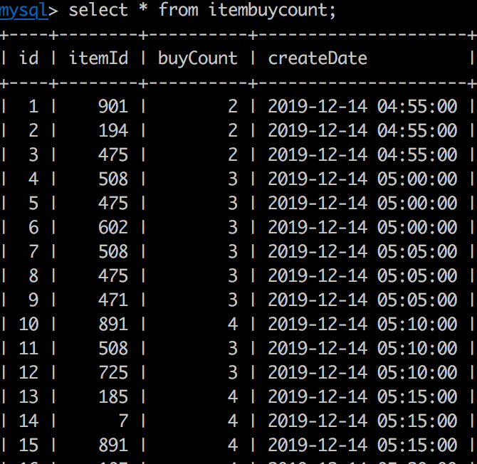

topN功能是一个非常常见的功能，比如查看最近几分钟的阅读最高数，购买最高数。
flink实现topN的功能也非常方便，下面就开始构建一个flink topN的程序。
还是像上篇博客一样，从kafka读取数据，然后进行计算和数据转换，最后sink到mysql中。
假设有个需求，实现一个统计每5分钟最高购买数的商品。
使用maven创建一个工程，具体步骤可以参考上边博文。然后创建一个数据库表，用于存储最终的结果集。语句如下：
CREATE TABLE `itembuycount` (
`id` mediumint NOT NULL auto_increment,
`itemId` bigint(255) NOT NULL,
`buyCount` bigint(11) DEFAULT NULL,
`createDate` timestamp NULL DEFAULT NULL,
PRIMARY KEY (`id`)
) ENGINE=InnoDB DEFAULT CHARSET=utf8mb4 COLLATE=utf8mb4_general_ci创建一个表对应的pojo类文件UserAction。里边主要是用户id，商品id，用户的行为，pv用户浏览，buy用户购买，cart加购物车，fav加入收藏。
package myflinktopn.pojo;
/**
* @author huangqingshi
* @Date 2019-12-13
*/
public class UserAction {
public long userId; //用户id
public long itemId; //商品id
public int categoryId; //商品分类id
public String behavior; //用户行为（pv, buy, cart, fav)
public long timestamp; //操作时间戳
public long getUserId() {
return userId;
}
public void setUserId(long userId) {
this.userId = userId;
}
public long getItemId() {
return itemId;
}
public void setItemId(long itemId) {
this.itemId = itemId;
}
public int getCategoryId() {
return categoryId;
}
public void setCategoryId(int categoryId) {
this.categoryId = categoryId;
}
public String getBehavior() {
return behavior;
}
public void setBehavior(String behavior) {
this.behavior = behavior;
}
public long getTimestamp() {
return timestamp;
}
public void setTimestamp(long timestamp) {
this.timestamp = timestamp;
}
}接下来创建一个kafka主题，存储发送和接受数据使用。
./bin/kafka-topics.sh --create --zookeeper localhost:2181 --replication-factor 1 --partitions 1 --topic USER_ACTIONkafka的主题创建好了之后，写一个程序往kafka里边写数据，一秒写一条。
package myflinktopn.kafka;
import com.alibaba.fastjson.JSON;
import myflinktopn.pojo.UserAction;
import org.apache.commons.lang3.RandomUtils;
import org.apache.kafka.clients.producer.KafkaProducer;
import org.apache.kafka.clients.producer.ProducerRecord;
import java.util.Arrays;
import java.util.List;
import java.util.Properties;
import java.util.concurrent.TimeUnit;
/**
* @author huangqingshi
* @Date 2019-12-07
*/
public class KafkaWriter {
//本地的kafka机器列表
public static final String BROKER_LIST = "localhost:9092";
//kafka的topic
public static final String TOPIC_USER_ACTION = "USER_ACTION";
//key序列化的方式，采用字符串的形式
public static final String KEY_SERIALIZER = "org.apache.kafka.common.serialization.StringSerializer";
//value的序列化的方式
public static final String VALUE_SERIALIZER = "org.apache.kafka.common.serialization.StringSerializer";
//用户的行为列表
public static final List<String> userBehaviors = Arrays.asList("pv", "buy", "cart", "fav");
public static void writeToKafka() throws Exception{
Properties props = new Properties();
props.put("bootstrap.servers", BROKER_LIST);
props.put("key.serializer", KEY_SERIALIZER);
props.put("value.serializer", VALUE_SERIALIZER);
KafkaProducer<String, String> producer = new KafkaProducer<>(props);
UserAction userAction = new UserAction();
userAction.setUserId(RandomUtils.nextLong(1, 100));
userAction.setItemId(RandomUtils.nextLong(1, 1000));
userAction.setCategoryId(RandomUtils.nextInt(1, 30));
userAction.setBehavior(userBehaviors.get(RandomUtils.nextInt(0, 3)));
userAction.setTimestamp(System.currentTimeMillis());
//转换成JSON
String userActionJson = JSON.toJSONString(userAction);
//包装成kafka发送的记录
ProducerRecord<String, String> record = new ProducerRecord<String, String>(TOPIC_USER_ACTION, null,
null, userActionJson);
//发送到缓存
producer.send(record);
System.out.println("向kafka发送数据:" + userActionJson);
//立即发送
producer.flush();
}
public static void main(String[] args) {
while(true) {
try {
//每1秒写一条数据
TimeUnit.SECONDS.sleep(1);
writeToKafka();
} catch (Exception e) {
e.printStackTrace();
}
}
}
}接下来还是创建数据库的连接工具类。
package myflinktopn.db;
import com.alibaba.druid.pool.DruidDataSource;
import java.sql.Connection;
/**
* @author huangqingshi
* @Date 2019-12-07
*/
public class DbUtils {
private static DruidDataSource dataSource;
public static Connection getConnection() throws Exception {
dataSource = new DruidDataSource();
dataSource.setDriverClassName("com.mysql.cj.jdbc.Driver");
dataSource.setUrl("jdbc:mysql://localhost:3306/testdb");
dataSource.setUsername("root");
dataSource.setPassword("root");
//设置初始化连接数，最大连接数，最小闲置数
dataSource.setInitialSize(10);
dataSource.setMaxActive(50);
dataSource.setMinIdle(5);
//返回连接
return dataSource.getConnection();
}
}接下来写sink到数据库的MySqlSink类，用于将结果接数据保存到数据库。
package myflinktopn.sink;
import myflinktopn.TopNJob;
import myflinktopn.db.DbUtils;
import myflinktopn.pojo.UserAction;
import org.apache.flink.configuration.Configuration;
import org.apache.flink.streaming.api.functions.sink.RichSinkFunction;
import java.sql.Connection;
import java.sql.PreparedStatement;
import java.sql.Timestamp;
import java.util.List;
/**
* @author huangqingshi
* @Date 2019-12-07
*/
public class MySqlSink extends RichSinkFunction<List<TopNJob.ItemBuyCount>> {
private PreparedStatement ps;
private Connection connection;
@Override
public void open(Configuration parameters) throws Exception {
super.open(parameters);
//获取数据库连接，准备写入数据库
connection = DbUtils.getConnection();
String sql = "insert into itembuycount(itemId, buyCount, createDate) values (?, ?, ?); ";
ps = connection.prepareStatement(sql);
System.out.println("-------------open------------");
}
@Override
public void close() throws Exception {
super.close();
//关闭并释放资源
if(connection != null) {
connection.close();
}
if(ps != null) {
ps.close();
}
System.out.println("-------------close------------");
}
@Override
public void invoke(List<TopNJob.ItemBuyCount> topNItems, Context context) throws Exception {
for(TopNJob.ItemBuyCount itemBuyCount : topNItems) {
ps.setLong(1, itemBuyCount.itemId);
ps.setLong(2, itemBuyCount.buyCount);
ps.setTimestamp(3, new Timestamp(itemBuyCount.windowEnd));
ps.addBatch();
}
//一次性写入
int[] count = ps.executeBatch();
System.out.println("-------------invoke------------");
System.out.println("成功写入Mysql数量：" + count.length);
}
}接下来咱们看一下实现TopNJob的全部代码，然后再继续分析下里边的细节。
package myflinktopn;
import com.alibaba.fastjson.JSONObject;
import myflinktopn.kafka.KafkaWriter;
import myflinktopn.pojo.UserAction;
import myflinktopn.sink.MySqlSink;
import org.apache.flink.api.common.functions.AggregateFunction;
import org.apache.flink.api.common.functions.FilterFunction;
import org.apache.flink.api.common.serialization.SimpleStringSchema;
import org.apache.flink.api.common.state.ListState;
import org.apache.flink.api.common.state.ListStateDescriptor;
import org.apache.flink.api.java.tuple.Tuple;
import org.apache.flink.api.java.tuple.Tuple1;
import org.apache.flink.configuration.Configuration;
import org.apache.flink.streaming.api.TimeCharacteristic;
import org.apache.flink.streaming.api.datastream.DataStream;
import org.apache.flink.streaming.api.datastream.DataStreamSource;
import org.apache.flink.streaming.api.environment.StreamExecutionEnvironment;
import org.apache.flink.streaming.api.functions.KeyedProcessFunction;
import org.apache.flink.streaming.api.functions.timestamps.BoundedOutOfOrdernessTimestampExtractor;
import org.apache.flink.streaming.api.functions.windowing.WindowFunction;
import org.apache.flink.streaming.api.windowing.time.Time;
import org.apache.flink.streaming.api.windowing.windows.TimeWindow;
import org.apache.flink.streaming.connectors.kafka.FlinkKafkaConsumer010;
import org.apache.flink.util.Collector;
import java.sql.Timestamp;
import java.util.ArrayList;
import java.util.Comparator;
import java.util.List;
import java.util.Properties;
/**
* @author huangqingshi
* @Date 2019-12-13
*/
public class TopNJob {
//最对延迟到达的时间
public static final long MAX_EVENT_DELAY = 10L;
public static void main(String[] args) throws Exception {
//构建流执行环境
StreamExecutionEnvironment env = StreamExecutionEnvironment.getExecutionEnvironment();
//设置并行度1，方便打印
env.setParallelism(1);
/** ProcessingTime：事件被处理的时间。也就是由机器的系统时间来决定。
EventTime：事件发生的时间。一般就是数据本身携带的时间。
*/
//设置下eventTime，默认为processTime即系统处理时间，我们需要统计一小时内的数据，也就是数据带的时间eventTime
env.setStreamTimeCharacteristic(TimeCharacteristic.EventTime);
//kafka
Properties prop = new Properties();
prop.put("bootstrap.servers", KafkaWriter.BROKER_LIST);
prop.put("zookeeper.connect", "localhost:2181");
prop.put("group.id", KafkaWriter.TOPIC_USER_ACTION);
prop.put("key.serializer", KafkaWriter.KEY_SERIALIZER);
prop.put("value.serializer", KafkaWriter.VALUE_SERIALIZER);
prop.put("auto.offset.reset", "latest");
DataStreamSource<String> dataStreamSource = env.addSource(new FlinkKafkaConsumer010<>(
KafkaWriter.TOPIC_USER_ACTION,
new SimpleStringSchema(),
prop
));
//从kafka里读取数据，转换成UserAction对象
DataStream<UserAction> dataStream = dataStreamSource.map(value -> JSONObject.parseObject(value, UserAction.class));
//将乱序的数据进行抽取出来，设置watermark，数据如果晚到10秒的会被丢弃
DataStream<UserAction> timedData = dataStream.assignTimestampsAndWatermarks(new UserActionTSExtractor());
//为了统计5分钟购买的最多的，所以我们需要过滤出购买的行为
DataStream<UserAction> filterData = timedData.filter(new FilterFunction<UserAction>() {
@Override
public boolean filter(UserAction userAction) throws Exception {
return userAction.getBehavior().contains("buy");
}
});
//窗口统计点击量 滑动的窗口 5分钟一次 统计一小时最高的 比如 [09:00, 10:00), [09:05, 10:05), [09:10, 10:10)…
DataStream<ItemBuyCount> windowedData = filterData
.keyBy("itemId")
.timeWindow(Time.minutes(60L), Time.minutes(5L))
.aggregate(new CountAgg(), new WindowResultFunciton());
//Top N 计算最热门的商品
DataStream<List<ItemBuyCount>> topItems = windowedData
.keyBy("windowEnd")
//点击前3的商品
.process(new TopNHotItems(3));
topItems.addSink(new MySqlSink());
//topItems.print();
env.execute("Top N Job");
}
/**
* 用于行为时间戳抽取器，最多十秒延迟，也就是晚到10秒的数据会被丢弃掉
*/
public static class UserActionTSExtractor extends BoundedOutOfOrdernessTimestampExtractor<UserAction> {
public UserActionTSExtractor() {
super(Time.seconds(MAX_EVENT_DELAY));
}
@Override
public long extractTimestamp(UserAction userAction) {
return userAction.getTimestamp();
}
}
/**
* 商品购买量（窗口操作的输出类型）
*/
public static class ItemBuyCount {
public long itemId; //商品ID;
public long windowEnd; //窗口结束时间戳
public long buyCount; //购买数量
public static ItemBuyCount of(long itemId, long windowEnd, long buyCount) {
ItemBuyCount itemBuyCount = new ItemBuyCount();
itemBuyCount.itemId = itemId;
itemBuyCount.windowEnd = windowEnd;
itemBuyCount.buyCount = buyCount;
return itemBuyCount;
}
}
/**
*
* COUNT 聚合函数实现，每出现一条记录加一。AggregateFunction<输入，汇总，输出>
*/
public static class CountAgg implements AggregateFunction<UserAction, Long, Long> {
@Override
public Long createAccumulator() {
return 0L;
}
@Override
public Long add(UserAction userAction, Long acc) {
return acc + 1;
}
@Override
public Long getResult(Long acc) {
return acc;
}
@Override
public Long merge(Long acc1, Long acc2) {
return acc1 + acc2;
}
}
/**
* 用于输出结果的窗口WindowFunction<输入，输出，键，窗口>
*/
public static class WindowResultFunciton implements WindowFunction<Long, ItemBuyCount, Tuple, TimeWindow> {
@Override
public void apply(
Tuple key, //窗口主键即itemId
TimeWindow window, //窗口
Iterable<Long> aggregationResult, //集合函数的结果，即count的值
Collector<ItemBuyCount> collector //输出类型collector
) throws Exception {
Long itemId = ((Tuple1<Long>) key).f0;
Long count =aggregationResult.iterator().next();
collector.collect(ItemBuyCount.of(itemId, window.getEnd(), count));
}
}
/**
* 求某个窗口中前N名的热门点击商品，key为窗口时间戳，输出为Top N 的结果字符串
*/
public static class TopNHotItems extends KeyedProcessFunction<Tuple, ItemBuyCount, List<ItemBuyCount>> {
private final int topSize;
public TopNHotItems(int topSize) {
this.topSize = topSize;
}
//用于存储商品与购买数的状态，待收齐同一个窗口的数据后，再触发 Top N 计算
private ListState<ItemBuyCount> itemState;
@Override
public void open(Configuration parameters) throws Exception {
super.open(parameters);
//状态注册
ListStateDescriptor<ItemBuyCount> itemViewStateDesc = new ListStateDescriptor<ItemBuyCount>(
"itemState-state", ItemBuyCount.class
);
itemState = getRuntimeContext().getListState(itemViewStateDesc);
}
@Override
public void processElement(
ItemBuyCount input,
Context context,
Collector<List<ItemBuyCount>> collector
) throws Exception {
//每条数据都保存到状态
itemState.add(input);
//注册 windowEnd+1 的 EventTime Timer, 当触发时，说明收集好了所有 windowEnd的商品数据
context.timerService().registerEventTimeTimer(input.windowEnd + 1);
}
@Override
public void onTimer(long timestamp, OnTimerContext ctx, Collector<List<ItemBuyCount>> out) throws Exception {
//获取收集到的所有商品点击量
List<ItemBuyCount> allItems = new ArrayList<ItemBuyCount>();
for(ItemBuyCount item : itemState.get()) {
allItems.add(item);
}
//提前清除状态中的数据，释放空间
itemState.clear();
//按照点击量从大到小排序
allItems.sort(new Comparator<ItemBuyCount>() {
@Override
public int compare(ItemBuyCount o1, ItemBuyCount o2) {
return (int) (o2.buyCount - o1.buyCount);
}
});
List<ItemBuyCount> itemBuyCounts = new ArrayList<>();
//将排名信息格式化成String，方便打印
StringBuilder result = new StringBuilder();
result.append("========================================\n");
result.append("时间：").append(new Timestamp(timestamp-1)).append("\n");
for (int i=0;i<topSize;i++) {
ItemBuyCount currentItem = allItems.get(i);
// No1: 商品ID=12224 购买量=2
result.append("No").append(i).append(":")
.append(" 商品ID=").append(currentItem.itemId)
.append(" 购买量=").append(currentItem.buyCount)
.append("\n");
itemBuyCounts.add(currentItem);
}
result.append("====================================\n\n");
out.collect(itemBuyCounts);
}
}
}以上里边的步骤：
1. 构建流执行的环境。
2. 设置并行度为1，为了方便下边打印。但是实际上可以不用设置并行度。
3. 设置流时间的特性，即EventTime。流时间一共有三种时间：
1）ProcessingTime时间，即算子处理的时间，默认flink的时间特性。
2）EventTime，事件处理时间，也就是程序所带的时间戳。此例子将使用由业务产生的时间戳作为时间戳。
3）IntestionTime，即到达flink的时间。
4. 连接kafka的属性读取数据。将kafka的数据转换成pojo对象。
5. 将乱序的数据使用BoundedOutOfOrdernessTimestampExtractor进行时间戳抽取和设置watermark。
6. 进行数据过滤，将useAction为buy的数据进行过滤出来，其他的直接丢弃。
7. 采用滑动窗口的方式对数据进行汇总并返回指定类型的数据。一小时为一个窗口，每五分钟往后滑动一下。数据的形式为[9:00 10:00), [9:05 10:05), [9:10 10:10)依次类推。
8. 最后是将数据排序，然后获取topN的数据。
接下来咱们再针对里边的细节看一下，如果数据是生序的数据，则采用AscendingTimestampExtractor进行时间戳抽取，无序可以采用上边5条说的类。有序的只需要进行时间戳抽取，抽取的时间戳就认为是整个的时间，也就是watermark时间，可以理解为全局时间。无序抽取的时候设置一个最晚到达的时间。举个例子，如果一条数据时间为9:04:55, 到达的时间为9:05:05，这样这条数据还是属于窗口[9:00 9:05:01)里边的，而不是[9:05:01 9:10:01)。
这个聚合方法aggregate(new CountAgg(), new WindowResultFunciton())里边声明了两个类，一个是聚合功能类，一个是结果窗口功能类。也就是使用第一个类将数据进行汇聚，第二个类将数据进行合并汇总并且输出自己定义的窗口结果集ItemBuyCount。
最后就是topN功能，这个类实现了KeyedProcessFunction，里边有三个方法 open, processElement, onTimer, 里边还有一个ListState<ItemBuyCount>，用于收集和记录状态信息，保证数据exactly-once语义。
open方法用于进行状态注册。
processElement把数据状态进行添加到list里边，然后注册时间时间windowEnd+1，即数据超过了windowEnd的时候就会触发onTimer时间。
onTimer用于把五分钟收集好的数据进行处理，从数据状态记录中把数据拿出来，然后清理数据状态，释放空间。然后将拿出来的数据进行排序，最后整理成sink所需要的结果集。
最后就把数据进行sink，保存到数据库。
下面看一下数据运行的结果，kafkaWriter打印的日志。
向kafka发送数据:{"behavior":"pv","categoryId":7,"itemId":19,"timestamp":1576325365016,"userId":56}执行TopNJob，MysqlSink执行的日志打印。
-------------invoke------------
成功写入Mysql数量：3
[myflinktopn.TopNJob$ItemBuyCount@611553e4, myflinktopn.TopNJob$ItemBuyCount@19739780, myflinktopn.TopNJob$ItemBuyCount@a76f1f0]
-------------invoke------------
成功写入Mysql数量：3
[myflinktopn.TopNJob$ItemBuyCount@3db32bd3, myflinktopn.TopNJob$ItemBuyCount@10f855ae, myflinktopn.TopNJob$ItemBuyCount@6a022d0b]
-------------invoke------------
成功写入Mysql数量：3
[myflinktopn.TopNJob$ItemBuyCount@4ae16ab8, myflinktopn.TopNJob$ItemBuyCount@6a8a29a3, myflinktopn.TopNJob$ItemBuyCount@2326adfb]写入到数据库的记录如下：

写入的时间都在同一个时刻，获取前三条购买最多的，所以三条写入的时间都一样的。
还有在运行的时候要注意kafkaWriter要多谢一些，因为要收集5分钟的数据，所以至少得跑5分钟。
最后我把代码放到git上了，可以进行访问：https://github.com/stonehqs/flink-topn ，有不对的地方，欢迎指正。